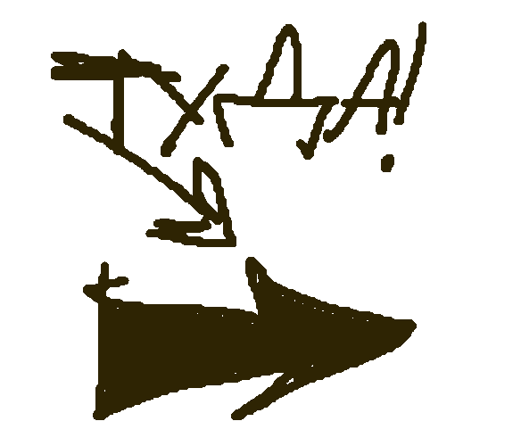
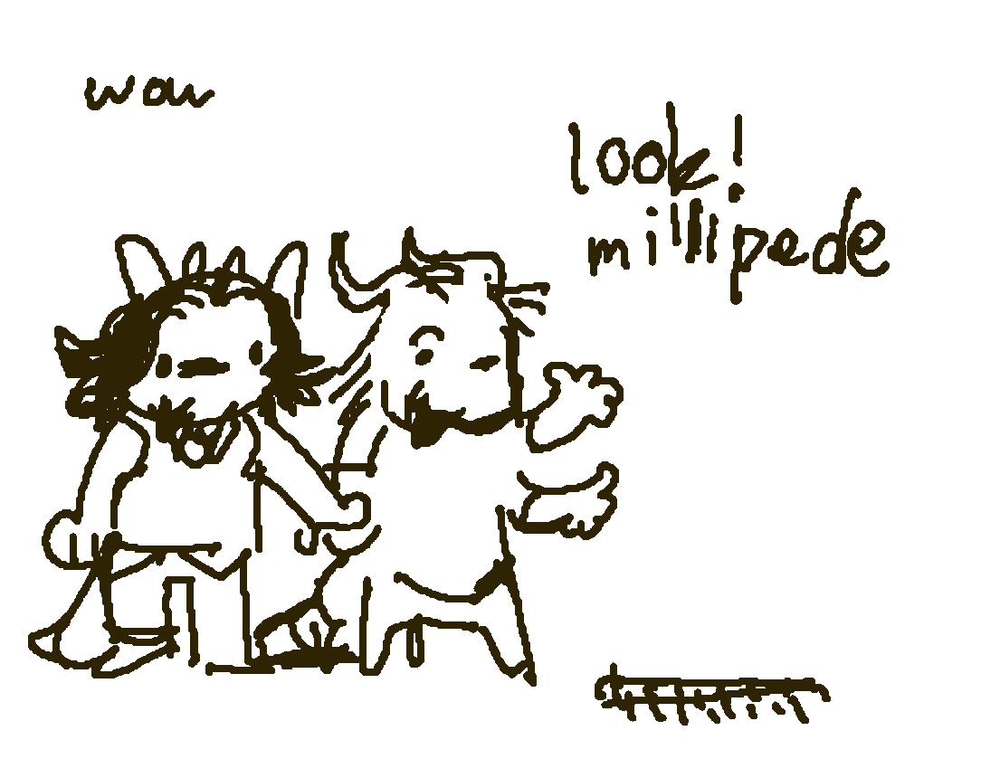
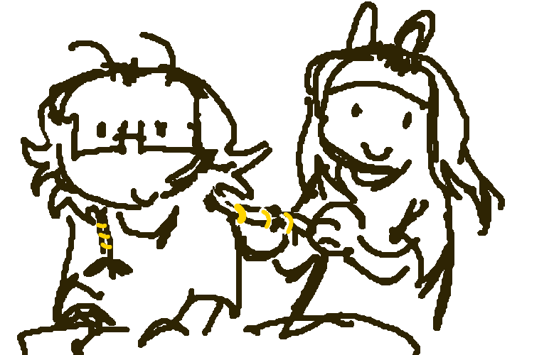
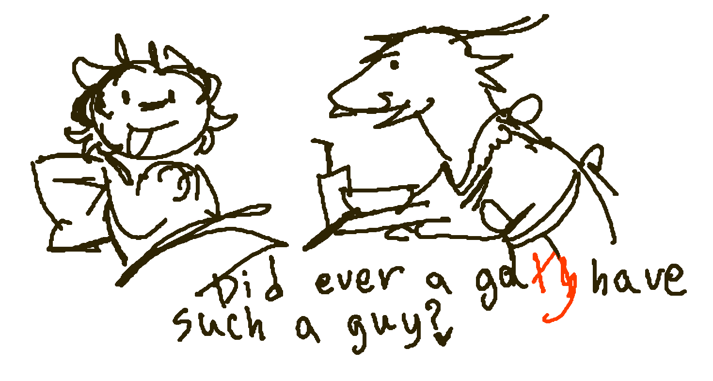
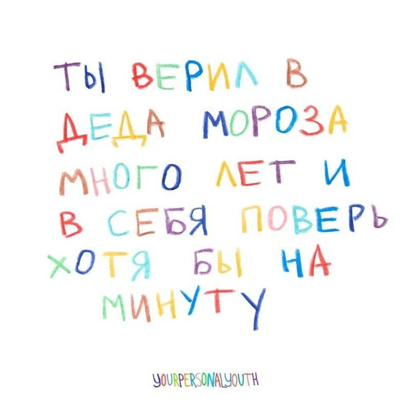
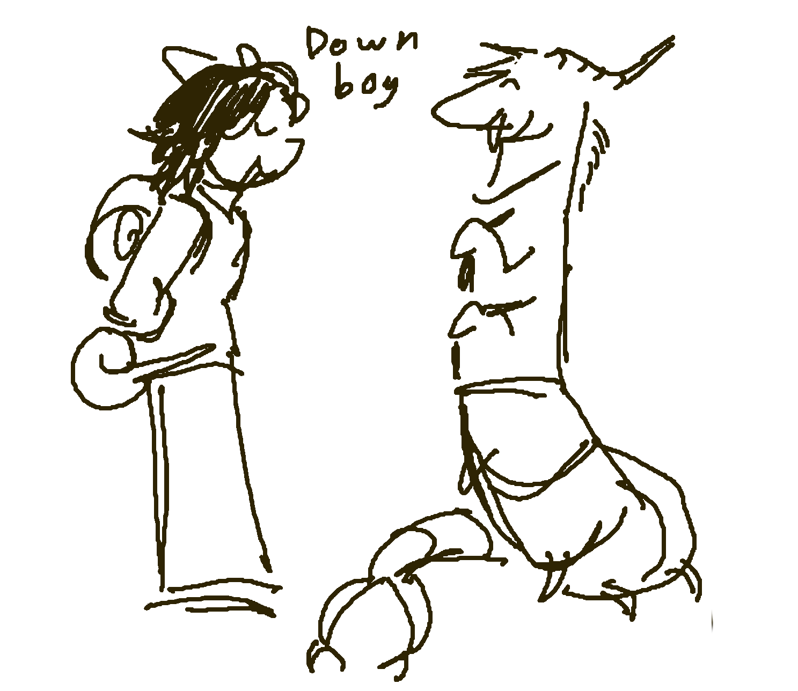

|  |
|

ты работаешь в своем темпе и делаешь достаточно, ты тот еще супер герой успевая сделать такое количество работы даже не успевая что то полностью |
|

все что ты делаешь не должно быть идеальным, твои действия слова и мысли имеют свой почерк по которым я тебя узнаю |
|

ты будешь любима всегда. твое имя упомянается в разговорах чаще чем мое  |


только ради такой сигма вумен есть желание вставать с кровати и стараться радовать ее 
|